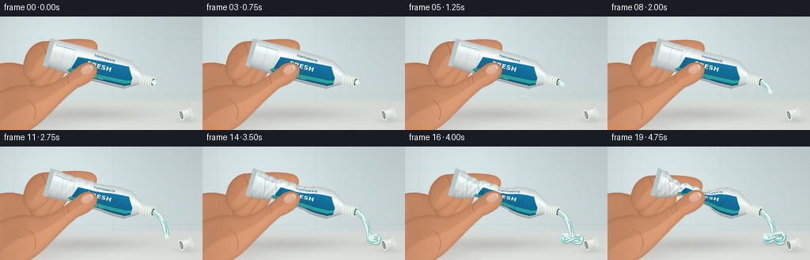
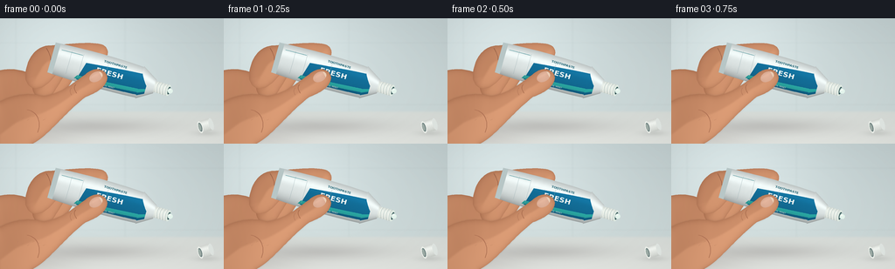

CODING AGENTS AS PIXEL WORLD MODELS
traex/GPT-6.1-Sol · phygen_014
点击播放 · 原生 RGB 像素
逐轮保存的候选
回放视频、检查图与代码变化。
每份候选均可单独播放。实际图片检查记录在下方工具轨迹中。
候选 01播放与检查图
点击播放 · 原生 RGB 像素


展开代码变化
--- 上一保存版本
+++ 本次保存版本
@@ -0,0 +1,277 @@
+"""Deterministic supersampled procedural RGB toothpaste-squeezing timelapse."""
+from pathlib import Path
+import json, math
+import numpy as np
+from PIL import Image, ImageDraw, ImageFont, ImageFilter
+from scipy.ndimage import distance_transform_edt, gaussian_filter
+from artifact_io import save
+
+ROOT=Path(__file__).resolve().parent
+SPEC=json.loads((ROOT/'task_spec.json').read_text())
+W,H=SPEC['width'],SPEC['height']; S=4
+WW,HH=W*S,H*S
+Y,X=np.mgrid[0:HH,0:WW].astype(float); X/=S; Y/=S
+rng=np.random.default_rng(42)
+noise=gaussian_filter(rng.normal(size=(HH,WW)),1.4)*1.5
+D=np.array([.962,.273]); N=np.array([-.273,.962]); O=np.array([130.,65.])
+U=(X-O[0])*D[0]+(Y-O[1])*D[1]
+V=(X-O[0])*N[0]+(Y-O[1])*N[1]
+
+def xy(u,v=0):
+ return O+D*u+N*v
+
+def smoothpoly(cmd):
+ """M/L/C path, sampled in screen-space coordinates."""
+ out=[]; cur=None
+ for seg in cmd:
+ if seg[0]=='M' or seg[0]=='L':
+ cur=np.array(seg[1:],float); out.append(tuple(cur))
+ elif seg[0]=='C':
+ a=cur.copy();b=np.array(seg[1:3]);c=np.array(seg[3:5]);e=np.array(seg[5:7])
+ for t in np.linspace(0,1,22)[1:]:
+ q=(1-t)**3*a+3*(1-t)**2*t*b+3*(1-t)*t*t*c+t**3*e
+ out.append(tuple(q))
+ cur=e
+ return out
+
+def maskpoly(points):
+ m=Image.new('L',(WW,HH)); ImageDraw.Draw(m).polygon([(round(a*S),round(b*S)) for a,b in points],fill=255)
+ return np.asarray(m)/255.
+
+def maskellipse(box):
+ m=Image.new('L',(WW,HH));ImageDraw.Draw(m).ellipse(tuple(round(a*S) for a in box),fill=255)
+ return np.asarray(m)/255.
+
+def blend(im,color,a):
+ c=np.asarray(color)
+ if a.ndim==2:a=a[...,None]
+ return im*(1-a)+c*a
+
+def line(im,pts,col,width):
+ # Antialiasing provided by final downsample.
+ layer=Image.new('RGB',(WW,HH)); dr=ImageDraw.Draw(layer)
+ pts=[tuple(np.asarray(p)*S) for p in pts]
+ dr.line(pts,fill=tuple(col),width=max(1,round(width*S)),joint='curve')
+ m=Image.new('L',(WW,HH));md=ImageDraw.Draw(m)
+ md.line(pts,fill=255,width=max(1,round(width*S)),joint='curve')
+ return blend(im,np.asarray(layer),np.asarray(m)/255.)
+
+def shaded_skin(im,points,seed=0,light=0):
+ a=maskpoly(points)
+ dist=distance_transform_edt(a>.5)/S
+ sd=gaussian_filter(dist,1.0*S)
+ gy,gx=np.gradient(sd)
+ rim=np.exp(-dist/2.8)
+ shading=9+16*np.tanh((.15-gx-.8*gy)*2)-26*rim+light
+ shading+=5*np.sin(X*.067+Y*.033)+noise*.4
+ color=np.stack([194+shading,133+shading*.89,98+shading*.75],-1)
+ return blend(im,np.clip(color,0,255),a)
+
+def stroke_curve(im,cmd,col,width):return line(im,smoothpoly(cmd),col,width)
+
+# Design the printed laminate once. It is warped with the collapsing tube.
+TW,TH=640,224
+tex=Image.new('RGB',(TW,TH),(231,239,238)); td=ImageDraw.Draw(tex)
+def uvtex(u,v):return ((u+76)/126*TW,(v+1)*.5*TH)
+# A deep blue printed ribbon and aqua swoosh, characteristic of toothpaste tubes.
+td.polygon([uvtex(-34,-.25),uvtex(31,-.57),uvtex(39,.13),uvtex(39,.79),uvtex(-40,.85)],fill=(20,113,156))
+td.polygon([uvtex(-40,.59),uvtex(39,.39),uvtex(39,.62),uvtex(-43,.82)],fill=(47,184,179))
+font='/usr/share/fonts/truetype/dejavu/DejaVuSans-Bold.ttf'
+small='/usr/share/fonts/truetype/dejavu/DejaVuSans.ttf'
+td.text(uvtex(-21,-.26),'FRESH',font=ImageFont.truetype(font,44),fill=(249,253,251))
+td.text(uvtex(-15,-.73),'TOOTHPASTE',font=ImageFont.truetype(font,19),fill=(30,99,117))
+td.text(uvtex(-12,.65),'COOL MINT',font=ImageFont.truetype(small,15),fill=(246,252,250))
+# Small tail print, subtle cap-end brand markings.
+td.line([uvtex(-65,-.63),uvtex(-40,-.63)],fill=(90,155,161),width=3)
+texture=np.asarray(tex).astype(float)
+
+def tube_width(u,p):
+ base=17.8+2.2*np.sin(np.clip((u+74)/112,0,1)*np.pi)
+ base=np.where(u>31,19.2-(u-31)*.62,base)
+ pinch=np.exp(-((u+24)/32)**4)
+ w=base*(1-.65*p*pinch)
+ w-=1.4*p*np.sin(u*.45+1)*np.exp(-((u+35)/32)**2)
+ return np.maximum(w,5.2)
+
+def tube_center(u,p):
+ return p*(1.9*np.sin((u+66)*.13)*np.exp(-((u+34)/38)**2))
+
+# Unmoving environment, with depth-of-field and contact shadows.
+bg=np.empty((HH,WW,3),float)
+wall=np.stack([194+Y*.095,207+Y*.09,208+Y*.08],-1)
+# Broad, soft daylight from an out-of-shot window.
+window=24*np.exp(-((X-64)/105)**2-((Y-19)/80)**2)
+wall+=window[...,None]
+bg[:]=wall
+# Blurred tile grout, deliberately faint.
+for gx in [18,143,268]:
+ shade=3.3*np.exp(-((X-gx)/1.4)**2)
+ bg-=shade[...,None]
+for yy in [28,99]:bg-=2.6*np.exp(-((Y-yy)/1.15)**2)[...,None]
+ground=np.stack([216+(Y-106)*.32,221+(Y-106)*.26,217+(Y-106)*.25],-1)
+a=1/(1+np.exp(-(Y-107)/.65))
+bg=blend(bg,ground,a)
+bg+=noise[...,None]*.55
+bg-=np.exp(-((X-109)/76)**2-((Y-124)/9)**2)[...,None]*np.array([27,30,29])
+bg-=np.exp(-((X-29)/55)**2-((Y-137)/12)**2)[...,None]*np.array([17,20,20])
+
+# A detached screw cap resting on the counter, separated from the dispensing tip.
+def draw_cap(im):
+ im-=np.exp(-((X-236)/14)**2-((Y-132)/3.2)**2)[...,None]*18
+ # Local axis points up and right: a short ribbed white cylinder.
+ A=np.array([.96,-.28]);B=np.array([.28,.96]);origin=np.array([229.,125.])
+ cu=(X-origin[0])*A[0]+(Y-origin[1])*A[1]
+ cv=(X-origin[0])*B[0]+(Y-origin[1])*B[1]
+ body=(cu>=0)&(cu<=13)&(abs(cv)<7)
+ shade=17*np.exp(-((cv+3)/2.5)**2)-22*(cv/7)**2-8*np.maximum(cv/7,0)
+ shade-=7*(.5+.5*np.cos(cu*3.7))
+ co=np.stack([236+shade,240+shade,235+shade],-1)
+ im=blend(im,np.clip(co,0,255),body.astype(float))
+ end=(((cu-13)/2.6)**2+(cv/7)**2<1)
+ im=blend(im,(228,234,230),end.astype(float))
+ lip=((cu/2.9)**2+(cv/7.1)**2<1)
+ im=blend(im,(241,245,239),lip.astype(float))
+ hole=((cu/2.05)**2+(cv/5.25)**2<1)
+ im=blend(im,(112,132,131),hole.astype(float))
+ small=((cu+.45)/1.5)**2+((cv+.2)/4.1)**2<1
+ im=blend(im,(159,174,168),small.astype(float))
+ return im
+bg=draw_cap(bg)
+
+# An arclength-sampled extrusion centreline. Downward gravity then deposited coils.
+base=[]
+start=xy(67,0)
+A=start;B=np.array([207.,88.]);C=np.array([211.,109.]);E=np.array([211.,119.])
+for t in np.linspace(0,1,400):base.append((1-t)**3*A+3*(1-t)**2*t*B+3*(1-t)*t*t*C+t**3*E)
+for t in np.linspace(0,4.5*np.pi,1300)[1:]:
+ # Rope accumulating on the counter. Consecutive arcs overlap instead of vanishing.
+ base.append([211+11.8*np.sin(t),119+3.3*np.sin(2*t)-.57*t])
+base=np.asarray(base)
+dists=np.r_[0,np.cumsum(np.linalg.norm(np.diff(base,axis=0),axis=1))]
+ss=np.arange(0,dists[-1],.34)
+rope=np.column_stack([np.interp(ss,dists,base[:,k]) for k in [0,1]])
+
+def draw_paste(im,length):
+ if length<.2:return im
+ n=max(2,int(length/.34))
+ pts=rope[:n].copy();ls=ss[:n]
+ # Ground shadow grows only where paste has actually arrived.
+ deposited=max(0,(length-39)/85)
+ im-=np.exp(-((X-211)/16)**2-((Y-124)/3.0)**2)[...,None]*min(1,deposited)*20
+ # Segments rendered in order: newer loops cover the older ones.
+ layer=Image.fromarray(np.uint8(np.clip(im,0,255))); dr=ImageDraw.Draw(layer)
+ rad=3.05
+ def segline(q,col,width):
+ dr.line([tuple(p*S) for p in q],fill=col,width=round(width*S),joint='curve')
+ # Chunking provides true over/under self-occlusion at deposited loops.
+ for lo in range(0,len(pts)-1,16):
+ hi=min(len(pts),lo+18); q=pts[lo:hi];s=ls[lo:hi]
+ tangent=np.gradient(q,axis=0);norm=np.column_stack([-tangent[:,1],tangent[:,0]])
+ norm/=np.maximum(np.linalg.norm(norm,axis=1)[:,None],1e-6)
+ segline(q,(135,175,176),rad*2+.6)
+ segline(q+np.array([-.3,-.55]),(227,244,238),rad*2-.6)
+ stripe=q+norm*(1.3*np.sin(s*.2))[:,None]
+ segline(stripe,(48,179,180),1.35)
+ segline(stripe+np.array([-.35,-.35]),(117,220,212),.55)
+ segline(q+np.array([-1.,-1.25]),(250,253,245),.82)
+ tip=pts[-1]*S
+ dr.ellipse((tip[0]-2.85*S,tip[1]-2.85*S,tip[0]+2.85*S,tip[1]+2.85*S),fill=(229,246,238))
+ dr.ellipse((tip[0]-1.65*S,tip[1]-2.1*S,tip[0]+.5*S,tip[1]-.8*S),fill=(251,255,250))
+ return np.asarray(layer).astype(float)
+
+def render(index):
+ t=index/(SPEC['frames']-1)
+ # The accelerating displacement is also the accelerating volume flux.
+ p=.025+.93*t**2.25
+ extruded=.35+141*t**2.45
+ im=bg.copy()
+ # Palm and wrist behind the tube.
+ palm=smoothpoly([('M',-15,64),('C',10,54,27,58,48,70),('C',64,78,71,95,65,108),('C',58,124,40,136,22,149),('L',-13,151)])
+ im=shaded_skin(im,palm,light=-3)
+ # Middle and ring fingers curled on the far side, partially hidden by the laminate.
+ for j in [2,1]:
+ dx=j*12;cy=48+j*2+7*p
+ finger=smoothpoly([('M',25+dx,78),('C',26+dx,58,30+dx,cy-9,44+dx,cy-9),('C',56+dx,cy-10,64+dx,cy-1,63+dx,cy+8),('C',61+dx,cy+18,55+dx,76,48+dx,87),('C',38+dx,94,25+dx,92,25+dx,78)])
+ im=shaded_skin(im,finger,light=-j*2)
+ # Index arches over the top of the tube, moving toward the thumb.
+ top=xy(-24,tube_center(-24,p)-tube_width(-24,p)-.8)
+ tx,ty=top
+ finger=smoothpoly([('M',29,70),('C',28,49+3*p,40,31+5*p,57,31+6*p),('C',74,30+6*p,tx-1,ty-14,tx+7,ty-7),('C',tx+14,ty-2,tx+10,ty+9,tx+3,ty+11),('C',tx-8,ty+14,70,58+4*p,62,67),('C',50,82,35,87,29,70)])
+ im=shaded_skin(im,finger,light=4)
+ im=stroke_curve(im,[('M',53,34+6*p),('C',56,39+6*p,58,43+6*p,58,48+6*p)],(158,102,76),.65)
+ im=stroke_curve(im,[('M',68,36+7*p),('C',68,40+7*p,71,43+7*p,74,45+7*p)],(174,115,85),.5)
+ # Flexible printed body, physical narrowing and crumpling under the grasp.
+ wc=tube_width(U,p);cen=tube_center(U,p);q=(V-cen)/wc
+ body=(U>-74)&(U<49)&(abs(q)<1)
+ ut=np.clip((U+76)/126*(TW-1),0,TW-1).astype(int)
+ vt=np.clip((q+1)*.5*(TH-1),0,TH-1).astype(int)
+ col=texture[vt,ut].copy()
+ shade=.79+.17*np.sqrt(np.clip(1-q*q,0,1))+.12*np.exp(-((q+.45)/.28)**2)
+ shade-=.15*np.maximum(q,0)**2
+ crinkle=p*np.exp(-((U+28)/38)**2)
+ folding=(np.sin(U*.65+q*6)+.5*np.sin(U*1.2-q*4))*crinkle
+ shade+=.075*folding
+ shade-=.16*crinkle*np.exp(-((q-.54*np.sin(U*.17))/.075)**2)
+ col*=shade[...,None]
+ col+=noise[...,None]*.8
+ im=blend(im,np.clip(col,0,255),body.astype(float))
+ # Foil sealed seam at the far end.
+ seam=body&(U<-68)
+ seamcol=np.stack([186+16*np.sin(U*7),201+16*np.sin(U*7),201+16*np.sin(U*7)],-1)
+ im=blend(im,seamcol,seam.astype(float))
+ # A narrow glossy fold under the increasing squeeze.
+ for uu in [-53,-39,-9]:
+ vals=np.linspace(-.7,.74,28)
+ pts=[xy(uu+2.7*p*np.sin(v*4),tube_center(uu,p)+tube_width(uu,p)*v) for v in vals]
+ im=line(im,pts,(156,176,180),.25+.3*p)
+ # Tube shoulder and exposed threaded nozzle.
+ neck=(U>=48)&(U<=64)&(abs(V)<6.5)
+ ns=7*np.exp(-((V+2.7)/2)**2)-22*(V/6.5)**2-12*np.maximum(V/6.5,0)
+ ncol=np.stack([232+ns,239+ns,233+ns],-1)
+ im=blend(im,ncol,neck.astype(float))
+ for uu in [51,54.4,57.8,61.2]:
+ rim=((U-uu-.85*(V/6)**2)/.65)**2+(V/6.9)**6<1
+ im=blend(im,(190,204,201),rim.astype(float))
+ hil=((U-uu+.35-.85*(V/6)**2)/.42)**2+(V/6.85)**6<1
+ im=blend(im,(248,250,242),hil.astype(float))
+ lip=((U-65)/2.5)**2+(V/6.6)**2<1
+ im=blend(im,(224,235,227),lip.astype(float))
+ hole=((U-65.7)/1.55)**2+(V/4.55)**2<1
+ im=blend(im,(50,82,84),hole.astype(float))
+ inner=((U-65.5)/.9)**2+((V+.1)/3.2)**2<1
+ im=blend(im,(99,130,128),inner.astype(float))
+ im=draw_paste(im,extruded)
+ # Thumb across the front, increasing pressure visibly flattens the body.
+ contact=xy(-22,tube_center(-22,p)+tube_width(-22,p)*.22)
+ tx,ty=contact
+ thumb=smoothpoly([('M',-12,103),('C',10,86,32,85,49,89),('C',67,88,tx-22,ty+10,tx-10,ty+1),('C',tx+1,ty-9,tx+14,ty-5,tx+15,ty+5),('C',tx+14,ty+15,tx+4,ty+22,tx-10,ty+27),('C',72,111,60,128,45,139),('C',27,152,3,155,-12,153)])
+ # A soft contact shadow follows the thumb, on the printed tube.
+ sh=maskpoly(thumb);shadow=gaussian_filter(sh,1.0*S)
+ im=blend(im,(87,75,59),shadow*.18)
+ im=shaded_skin(im,thumb,light=3)
+ # Thumbnail, tilted parallel with the thumb's long axis.
+ na=np.array([.88,-.47]);nb=np.array([.47,.88]);nc=np.array([tx+2,ty+4.0])
+ nu=(X-nc[0])*na[0]+(Y-nc[1])*na[1];nv=(X-nc[0])*nb[0]+(Y-nc[1])*nb[1]
+ nm=(nu/8.1)**2+(nv/5.55)**2<1
+ ns=6*np.exp(-((nv+2)/1.5)**2)-9*(nu/8)**2-10*(nv/6)**2
+ nailcol=np.stack([225+ns,178+ns,154+ns],-1)
+ im=blend(im,nailcol,nm.astype(float))
+ nailtip=nm&(nu>5.8)
+ im=blend(im,(237,212,188),nailtip.astype(float)*.85)
+ im=stroke_curve(im,[('M',tx-21,ty+13),('C',tx-24,ty+16,tx-22,ty+20,tx-20,ty+23)],(168,108,78),.7)
+ im=stroke_curve(im,[('M',tx-26,ty+17),('C',tx-29,ty+20,tx-27,ty+23,tx-26,ty+25)],(178,118,88),.45)
+ im=stroke_curve(im,[('M',31,105),('C',43,107,48,120,43,131)],(178,116,86),.65)
+ # Fine, stable skin detail on the thenar eminence.
+ for k in range(6):
+ aa=(19+k*6,113+k%3*2)
+ im=line(im,[aa,(aa[0]+2.3,aa[1]-.8)],(190,132,99),.22)
+ # Subtle lens vignette and sensor grain retain a consistent photographic look.
+ vignette=1-.045*((X-128)/160)**2-.04*((Y-72)/100)**2
+ im*=vignette[...,None]
+ img=Image.fromarray(np.uint8(np.clip(im,0,255)))
+ return np.asarray(img.resize((W,H),Image.Resampling.LANCZOS))
+
+if __name__=='__main__':
+ frames=np.stack([render(i) for i in range(SPEC['frames'])])
+ save(frames,ROOT)
+ print(f'Saved {len(frames)} RGB frames: {frames.shape}, {frames.dtype}')
可观测工具轨迹
实际执行的命令与返回图片。
命令 1exit 0
/bin/bash -lc "ls -la && cat prompt.txt && printf '\\n---RULES---\\n' && cat GENERATION_RULES.md && printf '\\n---SPEC---\\n' && cat task_spec.json"
命令 2exit 0
/bin/bash -lc "cat artifact_io.py && python - <<'PY' import importlib.util for x in ['numpy','PIL','cv2','scipy']: print(x, bool(importlib.util.find_spec(x))) PY"
命令 3exit 0
/bin/bash -lc 'fc-list | head -15'
命令 4exit 0
/bin/bash -lc 'command -v ffmpeg || true'
命令 5exit 0
/bin/bash -lc "cat > generate.py <<'PY'
\"\"\"Deterministic supersampled procedural RGB toothpaste-squeezing timelapse.\"\"\"
from pathlib import Path
import json, math
import numpy as np
from PIL import Image, ImageDraw, ImageFont, ImageFilter
from scipy.ndimage import distance_transform_edt, gaussian_filter
from artifact_io import save
ROOT=Path(__file__).resolve().parent
SPEC=json.loads((ROOT/'task_spec.json').read_text())
W,H=SPEC['width'],SPEC['height']; S=4
WW,HH=W*S,H*S
Y,X=np.mgrid[0:HH,0:WW].astype(float); X/=S; Y/=S
rng=np.random.default_rng(42)
noise=gaussian_filter(rng.normal(size=(HH,WW)),1.4)*1.5
D=np.array([.962,.273]); N=np.array([-.273,.962]); O=np.array([130.,65.])
U=(X-O[0])*D[0]+(Y-O[1])*D[1]
V=(X-O[0])*N[0]+(Y-O[1])*N[1]
def xy(u,v=0):
return O+D*u+N*v
def smoothpoly(cmd):
\"\"\"M/L/C path, sampled in screen-space coordinates.\"\"\"
out=[]; cur=None
for seg in cmd:
if seg[0]=='M' or seg[0]=='L':
cur=np.array(seg[1:],float); out.append(tuple(cur))
elif seg[0]=='C':
a=cur.copy();b=np.array(seg[1:3]);c=np.array(seg[3:5]);e=np.array(seg[5:7])
for t in np.linspace(0,1,22)[1:]:
q=(1-t)**3*a+3*(1-t)**2*t*b+3*(1-t)*t*t*c+t**3*e
out.append(tuple(q))
cur=e
return out
def maskpoly(points):
m=Image.new('L',(WW,HH)); ImageDraw.Draw(m).polygon([(round(a*S),round(b*S)) for a,b in points],fill=255)
return np.asarray(m)/255.
def maskellipse(box):
m=Image.new('L',(WW,HH));ImageDraw.Draw(m).ellipse(tuple(round(a*S) for a in box),fill=255)
return np.asarray(m)/255.
def blend(im,color,a):
c=np.asarray(color)
if a.ndim==2:a=a[...,None]
return im*(1-a)+c*a
def line(im,pts,col,width):
# Antialiasing provided by final downsample.
layer=Image.new('RGB',(WW,HH)); dr=ImageDraw.Draw(layer)
pts=[tuple(np.asarray(p)*S) for p in pts]
dr.line(pts,fill=tuple(col),width=max(1,round(width*S)),joint='curve')
m=Image.new('L',(WW,HH));md=ImageDraw.Draw(m)
md.line(pts,fill=255,width=max(1,round(width*S)),joint='curve')
return blend(im,np.asarray(layer),np.asarray(m)/255.)
def shaded_skin(im,points,seed=0,light=0):
a=maskpoly(points)
dist=distance_transform_edt(a>.5)/S
sd=gaussian_filter(dist,1.0*S)
gy,gx=np.gradient(sd)
rim=np.exp(-dist/2.8)
shading=9+16*np.tanh((.15-gx-.8*gy)*2)-26*rim+light
shading+=5*np.sin(X*.067+Y*.033)+noise*.4
color=np.stack([194+shading,133+shading*.89,98+shading*.75],-1)
return blend(im,np.clip(color,0,255),a)
def stroke_curve(im,cmd,col,width):return line(im,smoothpoly(cmd),col,width)
# Design the printed laminate once. It is warped with the collapsing tube.
TW,TH=640,224
tex=Image.new('RGB',(TW,TH),(231,239,238)); td=ImageDraw.Draw(tex)
def uvtex(u,v):return ((u+76)/126*TW,(v+1)*.5*TH)
# A deep blue printed ribbon and aqua swoosh, characteristic of toothpaste tubes.
td.polygon([uvtex(-34,-.25),uvtex(31,-.57),uvtex(39,.13),uvtex(39,.79),uvtex(-40,.85)],fill=(20,113,156))
td.polygon([uvtex(-40,.59),uvtex(39,.39),uvtex(39,.62),uvtex(-43,.82)],fill=(47,184,179))
font='/usr/share/fonts/truetype/dejavu/DejaVuSans-Bold.ttf'
small='/usr/share/fonts/truetype/dejavu/DejaVuSans.ttf'
td.text(uvtex(-21,-.26),'FRESH',font=ImageFont.truetype(font,44),fill=(249,253,251))
td.text(uvtex(-15,-.73),'TOOTHPASTE',font=ImageFont.truetype(font,19),fill=(30,99,117))
td.text(uvtex(-12,.65),'COOL MINT',font=ImageFont.truetype(small,15),fill=(246,252,250))
# Small tail print, subtle cap-end brand markings.
td.line([uvtex(-65,-.63),uvtex(-40,-.63)],fill=(90,155,161),width=3)
texture=np.asarray(tex).astype(float)
def tube_width(u,p):
base=17.8+2.2*np.sin(np.clip((u+74)/112,0,1)*np.pi)
base=np.where(u>31,19.2-(u-31)*.62,base)
pinch=np.exp(-((u+24)/32)**4)
w=base*(1-.65*p*pinch)
w-=1.4*p*np.sin(u*.45+1)*np.exp(-((u+35)/32)**2)
return np.maximum(w,5.2)
def tube_center(u,p):
return p*(1.9*np.sin((u+66)*.13)*np.exp(-((u+34)/38)**2))
# Unmoving environment, with depth-of-field and contact shadows.
bg=np.empty((HH,WW,3),float)
wall=np.stack([194+Y*.095,207+Y*.09,208+Y*.08],-1)
# Broad, soft daylight from an out-of-shot window.
window=24*np.exp(-((X-64)/105)**2-((Y-19)/80)**2)
wall+=window[...,None]
bg[:]=wall
# Blurred tile grout, deliberately faint.
for gx in [18,143,268]:
shade=3.3*np.exp(-((X-gx)/1.4)**2)
bg-=shade[...,None]
for yy in [28,99]:bg-=2.6*np.exp(-((Y-yy)/1.15)**2)[...,None]
ground=np.stack([216+(Y-106)*.32,221+(Y-106)*.26,217+(Y-106)*.25],-1)
a=1/(1+np.exp(-(Y-107)/.65))
bg=blend(bg,ground,a)
bg+=noise[...,None]*.55
bg-=np.exp(-((X-109)/76)**2-((Y-124)/9)**2)[...,None]*np.array([27,30,29])
bg-=np.exp(-((X-29)/55)**2-((Y-137)/12)**2)[...,None]*np.array([17,20,20])
# A detached screw cap resting on the counter, separated from the dispensing tip.
def draw_cap(im):
im-=np.exp(-((X-236)/14)**2-((Y-132)/3.2)**2)[...,None]*18
# Local axis points up and right: a short ribbed white cylinder.
A=np.array([.96,-.28]);B=np.array([.28,.96]);origin=np.array([229.,125.])
cu=(X-origin[0])*A[0]+(Y-origin[1])*A[1]
cv=(X-origin[0])*B[0]+(Y-origin[1])*B[1]
body=(cu>=0)&(cu<=13)&(abs(cv)<7)
shade=17*np.exp(-((cv+3)/2.5)**2)-22*(cv/7)**2-8*np.maximum(cv/7,0)
shade-=7*(.5+.5*np.cos(cu*3.7))
co=np.stack([236+shade,240+shade,235+shade],-1)
im=blend(im,np.clip(co,0,255),body.astype(float))
end=(((cu-13)/2.6)**2+(cv/7)**2<1)
im=blend(im,(228,234,230),end.astype(float))
lip=((cu/2.9)**2+(cv/7.1)**2<1)
im=blend(im,(241,245,239),lip.astype(float))
hole=((cu/2.05)**2+(cv/5.25)**2<1)
im=blend(im,(112,132,131),hole.astype(float))
small=((cu+.45)/1.5)**2+((cv+.2)/4.1)**2<1
im=blend(im,(159,174,168),small.astype(float))
return im
bg=draw_cap(bg)
# An arclength-sampled extrusion centreline. Downward gravity then deposited coils.
base=[]
start=xy(67,0)
A=start;B=np.array([207.,88.]);C=np.array([211.,109.]);E=np.array([211.,119.])
for t in np.linspace(0,1,400):base.append((1-t)**3*A+3*(1-t)**2*t*B+3*(1-t)*t*t*C+t**3*E)
for t in np.linspace(0,4.5*np.pi,1300)[1:]:
# Rope accumulating on the counter. Consecutive arcs overlap instead of vanishing.
base.append([211+11.8*np.sin(t),119+3.3*np.sin(2*t)-.57*t])
base=np.asarray(base)
dists=np.r_[0,np.cumsum(np.linalg.norm(np.diff(base,axis=0),axis=1))]
ss=np.arange(0,dists[-1],.34)
rope=np.column_stack([np.interp(ss,dists,base[:,k]) for k in [0,1]])
def draw_paste(im,length):
if length<.2:return im
n=max(2,int(length/.34))
pts=rope[:n].copy();ls=ss[:n]
# Ground shadow grows only where paste has actually arrived.
deposited=max(0,(length-39)/85)
im-=np.exp(-((X-211)/16)**2-((Y-124)/3.0)**2)[...,None]*min(1,deposited)*20
# Segments rendered in order: newer loops cover the older ones.
layer=Image.fromarray(np.uint8(np.clip(im,0,255))); dr=ImageDraw.Draw(layer)
rad=3.05
def segline(q,col,width):
dr.line([tuple(p*S) for p in q],fill=col,width=round(width*S),joint='curve')
# Chunking provides true over/under self-occlusion at deposited loops.
for lo in range(0,len(pts)-1,16):
hi=min(len(pts),lo+18); q=pts[lo:hi];s=ls[lo:hi]
tangent=np.gradient(q,axis=0);norm=np.column_stack([-tangent[:,1],tangent[:,0]])
norm/=np.maximum(np.linalg.norm(norm,axis=1)[:,None],1e-6)
segline(q,(135,175,176),rad*2+.6)
segline(q+np.array([-.3,-.55]),(227,244,238),rad*2-.6)
stripe=q+norm*(1.3*np.sin(s*.2))[:,None]
segline(stripe,(48,179,180),1.35)
segline(stripe+np.array([-.35,-.35]),(117,220,212),.55)
segline(q+np.array([-1.,-1.25]),(250,253,245),.82)
tip=pts[-1]*S
dr.ellipse((tip[0]-2.85*S,tip[1]-2.85*S,tip[0]+2.85*S,tip[1]+2.85*S),fill=(229,246,238))
dr.ellipse((tip[0]-1.65*S,tip[1]-2.1*S,tip[0]+.5*S,tip[1]-.8*S),fill=(251,255,250))
return np.asarray(layer).astype(float)
def render(index):
t=index/(SPEC['frames']-1)
# The accelerating displacement is also the accelerating volume flux.
p=.025+.93*t**2.25
extruded=.35+141*t**2.45
im=bg.copy()
# Palm and wrist behind the tube.
palm=smoothpoly([('M',-15,64),('C',10,54,27,58,48,70),('C',64,78,71,95,65,108),('C',58,124,40,136,22,149),('L',-13,151)])
im=shaded_skin(im,palm,light=-3)
# Middle and ring fingers curled on the far side, partially hidden by the laminate.
for j in [2,1]:
dx=j*12;cy=48+j*2+7*p
finger=smoothpoly([('M',25+dx,78),('C',26+dx,58,30+dx,cy-9,44+dx,cy-9),('C',56+dx,cy-10,64+dx,cy-1,63+dx,cy+8),('C',61+dx,cy+18,55+dx,76,48+dx,87),('C',38+dx,94,25+dx,92,25+dx,78)])
im=shaded_skin(im,finger,light=-j*2)
# Index arches over the top of the tube, moving toward the thumb.
top=xy(-24,tube_center(-24,p)-tube_width(-24,p)-.8)
tx,ty=top
finger=smoothpoly([('M',29,70),('C',28,49+3*p,40,31+5*p,57,31+6*p),('C',74,30+6*p,tx-1,ty-14,tx+7,ty-7),('C',tx+14,ty-2,tx+10,ty+9,tx+3,ty+11),('C',tx-8,ty+14,70,58+4*p,62,67),('C',50,82,35,87,29,70)])
im=shaded_skin(im,finger,light=4)
im=stroke_curve(im,[('M',53,34+6*p),('C',56,39+6*p,58,43+6*p,58,48+6*p)],(158,102,76),.65)
im=stroke_curve(im,[('M',68,36+7*p),('C',68,40+7*p,71,43+7*p,74,45+7*p)],(174,115,85),.5)
# Flexible printed body, physical narrowing and crumpling under the grasp.
wc=tube_width(U,p);cen=tube_center(U,p);q=(V-cen)/wc
body=(U>-74)&(U<49)&(abs(q)<1)
ut=np.clip((U+76)/126*(TW-1),0,TW-1).astype(int)
vt=np.clip((q+1)*.5*(TH-1),0,TH-1).astype(int)
col=texture[vt,ut].copy()
shade=.79+.17*np.sqrt(np.clip(1-q*q,0,1))+.12*np.exp(-((q+.45)/.28)**2)
shade-=.15*np.maximum(q,0)**2
crinkle=p*np.exp(-((U+28)/38)**2)
folding=(np.sin(U*.65+q*6)+.5*np.sin(U*1.2-q*4))*crinkle
shade+=.075*folding
shade-=.16*crinkle*np.exp(-((q-.54*np.sin(U*.17))/.075)**2)
col*=shade[...,None]
col+=noise[...,None]*.8
im=blend(im,np.clip(col,0,255),body.astype(float))
# Foil sealed seam at the far end.
seam=body&(U<-68)
seamcol=np.stack([186+16*np.sin(U*7),201+16*np.sin(U*7),201+16*np.sin(U*7)],-1)
im=blend(im,seamcol,seam.astype(float))
# A narrow glossy fold under the increasing squeeze.
for uu in [-53,-39,-9]:
vals=np.linspace(-.7,.74,28)
pts=[xy(uu+2.7*p*np.sin(v*4),tube_center(uu,p)+tube_width(uu,p)*v) for v in vals]
im=line(im,pts,(156,176,180),.25+.3*p)
# Tube shoulder and exposed threaded nozzle.
neck=(U>=48)&(U<=64)&(abs(V)<6.5)
ns=7*np.exp(-((V+2.7)/2)**2)-22*(V/6.5)**2-12*np.maximum(V/6.5,0)
ncol=np.stack([232+ns,239+ns,233+ns],-1)
im=blend(im,ncol,neck.astype(float))
for uu in [51,54.4,57.8,61.2]:
rim=((U-uu-.85*(V/6)**2)/.65)**2+(V/6.9)**6<1
im=blend(im,(190,204,201),rim.astype(float))
hil=((U-uu+.35-.85*(V/6)**2)/.42)**2+(V/6.85)**6<1
im=blend(im,(248,250,242),hil.astype(float))
lip=((U-65)/2.5)**2+(V/6.6)**2<1
im=blend(im,(224,235,227),lip.astype(float))
hole=((U-65.7)/1.55)**2+(V/4.55)**2<1
im=blend(im,(50,82,84),hole.astype(float))
inner=((U-65.5)/.9)**2+((V+.1)/3.2)**2<1
im=blend(im,(99,130,128),inner.astype(float))
im=draw_paste(im,extruded)
# Thumb across the front, increasing pressure visibly flattens the body.
contact=xy(-22,tube_center(-22,p)+tube_width(-22,p)*.22)
tx,ty=contact
thumb=smoothpoly([('M',-12,103),('C',10,86,32,85,49,89),('C',67,88,tx-22,ty+10,tx-10,ty+1),('C',tx+1,ty-9,tx+14,ty-5,tx+15,ty+5),('C',tx+14,ty+15,tx+4,ty+22,tx-10,ty+27),('C',72,111,60,128,45,139),('C',27,152,3,155,-12,153)])
# A soft contact shadow follows the thumb, on the printed tube.
sh=maskpoly(thumb);shadow=gaussian_filter(sh,1.0*S)
im=blend(im,(87,75,59),shadow*.18)
im=shaded_skin(im,thumb,light=3)
# Thumbnail, tilted parallel with the thumb's long axis.
na=np.array([.88,-.47]);nb=np.array([.47,.88]);nc=np.array([tx+2,ty+4.0])
nu=(X-nc[0])*na[0]+(Y-nc[1])*na[1];nv=(X-nc[0])*nb[0]+(Y-nc[1])*nb[1]
nm=(nu/8.1)**2+(nv/5.55)**2<1
ns=6*np.exp(-((nv+2)/1.5)**2)-9*(nu/8)**2-10*(nv/6)**2
nailcol=np.stack([225+ns,178+ns,154+ns],-1)
im=blend(im,nailcol,nm.astype(float))
nailtip=nm&(nu>5.8)
im=blend(im,(237,212,188),nailtip.astype(float)*.85)
im=stroke_curve(im,[('M',tx-21,ty+13),('C',tx-24,ty+16,tx-22,ty+20,tx-20,ty+23)],(168,108,78),.7)
im=stroke_curve(im,[('M',tx-26,ty+17),('C',tx-29,ty+20,tx-27,ty+23,tx-26,ty+25)],(178,118,88),.45)
im=stroke_curve(im,[('M',31,105),('C',43,107,48,120,43,131)],(178,116,86),.65)
# Fine, stable skin detail on the thenar eminence.
for k in range(6):
aa=(19+k*6,113+k%3*2)
im=line(im,[aa,(aa[0]+2.3,aa[1]-.8)],(190,132,99),.22)
# Subtle lens vignette and sensor grain retain a consistent photographic look.
vignette=1-.045*((X-128)/160)**2-.04*((Y-72)/100)**2
im*=vignette[...,None]
img=Image.fromarray(np.uint8(np.clip(im,0,255)))
return np.asarray(img.resize((W,H),Image.Resampling.LANCZOS))
if __name__=='__main__':
frames=np.stack([render(i) for i in range(SPEC['frames'])])
save(frames,ROOT)
print(f'Saved {len(frames)} RGB frames: {frames.shape}, {frames.dtype}')
PY
python generate.py"命令 6exit 0
/bin/bash -lc "python - <<'PY'
from pathlib import Path
import numpy as np
from PIL import Image
p=Path('.')
a=np.load(p/'pixels.npz')['pixels']
assert a.shape==(144,256,20)
files=sorted((p/'frames').glob('*.png'))
assert len(files)==20
assert all(Image.open(f).mode=='RGB' and Image.open(f).size==(256,144) for f in files)
for f in ['generate.py','pixels.npz','index.html','inspection.png','transition_check.png']:
print(f, (p/f).stat().st_size,'bytes')
print('Validated: 20 RGB frames at 256 Ã 144, 4 fps.')
PY"保存候选 1 份；完成命令 6 次；可验证图片返回 0 张。原始 API 响应与完整日志保留在本地。